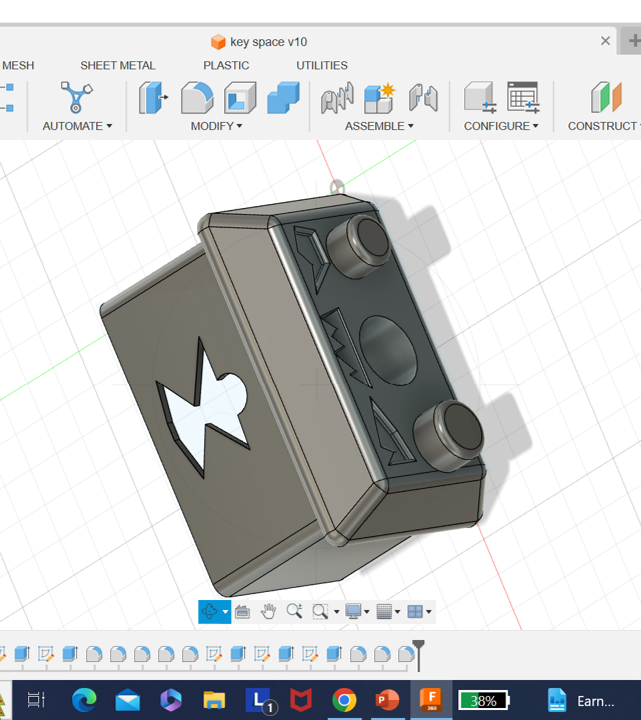

Welcome to Malia's Boards Page
My objectives for the Robotics and Embedded System major are:
- Design and complete robotic and embedded systems solutions that apply to real-world situations and challenges.
I picked my final from C++ and 7 segment display. The game takes user inputs and changes the dialogue options based on the user’s input. The seven-segment display takes the user inputs on button changes it to binary and can display what the user wants.https://github.com/Wolfpanda01/Final-for-c7 segment display

- Implement a simple microprocessor using digital logic design.
- Demonstrate embedded system design skills, including, but not limited to, microcontroller selection, schematic design, printed circuit board layout, design for electromagnetic compatibility and design for manufacturing.
- Apply knowledge of transducers, actuators and simultaneous hardware and software development in the design of an embedded system.
- Design and analyze real-time embedded systems, including advanced digital logic design, signal processing and highspeed digital systems.
- Implement and evaluate algorithms and methods enabling autonomy in a mobile robot.
I picked my M5stickCplus project and the 4-bit adder project.
The Firebase project uses user input and control over a led with an on/off system.
The 4-bit adder project is a project that takes the users input and gives them what the binary number is remaining.
https://youtu.be/ZErp1pl4i1w
https://github.com/Wolfpanda01/Firebaselight
4-bit adder
I picked the chained led project and perfboard assignment.
I picked a clean schematic that is easy to be copied.
The perfboard show how I can make a simple circuit in a very small section of a perfboard.


I picked the RC oscillator and IR senser.
The IR sensor adds different button presses till the correct code it input in.
The RC oscillator has LEDs go back and forth in a pattern due to the BJT.
RC oscillator
IR senser

I picked my final for C++ and 7 segment display.
The 7 seven segment display uses Arduino code to process button presses into binary and changes it to a number or letter depending on the bit.
The C++ final uses code to calculate damage, pointers, uses classes.
C++ game
I put my boar project and wheel encoder project.
The wheel encoder drive a robot around in a simple way with directions given in the code.
The boar project is a project were servo control the angle of the boars’ legs to enable a boar robot to walk.
Boar legs servos
Wheel encoder
My objectives for the 3D maker and Fabrication major are:
- Demonstrate the ability to prototype, build, and apply for patents for technology products meeting specific human factors, forms and function criteria
I picked a book holder and model stand.These were two project that met my client’s expectations and were prototyped multiple times.They both are extremely function and when though different test.Water Test

- Demonstrate the ability to evaluate trends in design principles and apply them into the form and function of devices
- Demonstrate the ability to evaluate material and build technique options during the creation of products and their prototypes
- Demonstrate the ability to evaluate and implement developments within electromechanical,algrithmic,robotic, microprocessor, sensor and other advancing technology areas while making product design decisions
- Demonstrate the ability to work within a maker studio environment to design, build, test and revise products that neet client timeline, design and quality requirements
- Demonstrate proficiency with industry accepted prototyping, modeling, build and maker tool and techniques
I picked a brace and prototype of the book holder.
For the book holder, I used triangles and poles as a way to save on materials and keep strength.
The trend I followed for the brace was the ability to wear an object in a brace form with a tying mechanism.


I picked two materials I’ve tested.


 https://github.com/Wolfpanda01/drone-web-page
https://github.com/Wolfpanda01/drone-web-page
These were in a test showing the strength of different materials that could be used in the lining of a game console game case.
In the case face PLA was the winner in the test proving its durability.
I picked a model stand that can have LEDs put under it and my M5stickplus case.
The M5stickplus case was made to hold the tiny microprocessor safely.
The model stand was made for displaying models with LEDs under to light from the bottom.
I picked my drone and an old part of murphy.
I made both of those using the maker’s space equipment and resources.
The murphy part was a test of making a parts holder that worked with our needs.
I picked the model stand and the model of the book holder.
I picked this two because they show that have the ability to use different software to model parts.
That is mostly shown in the book holder model.
